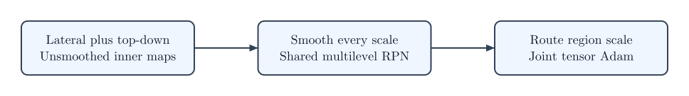
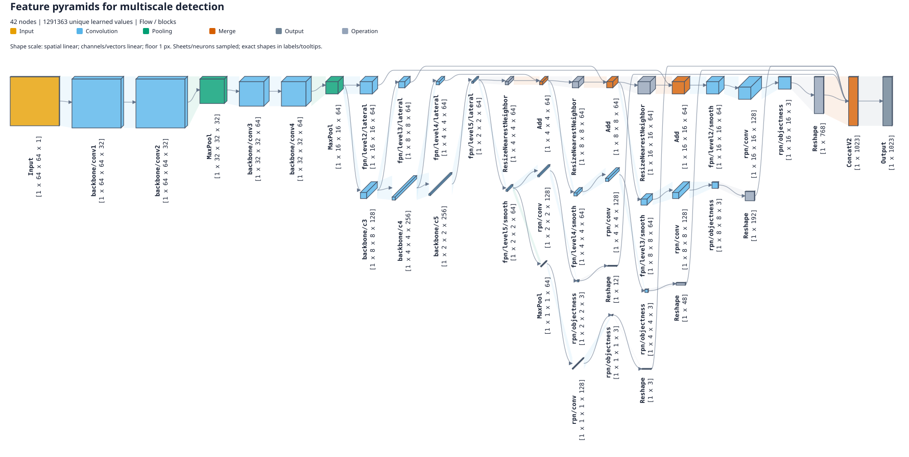
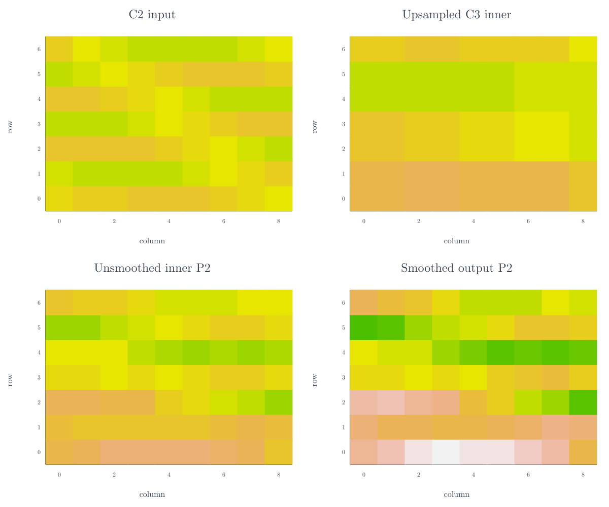
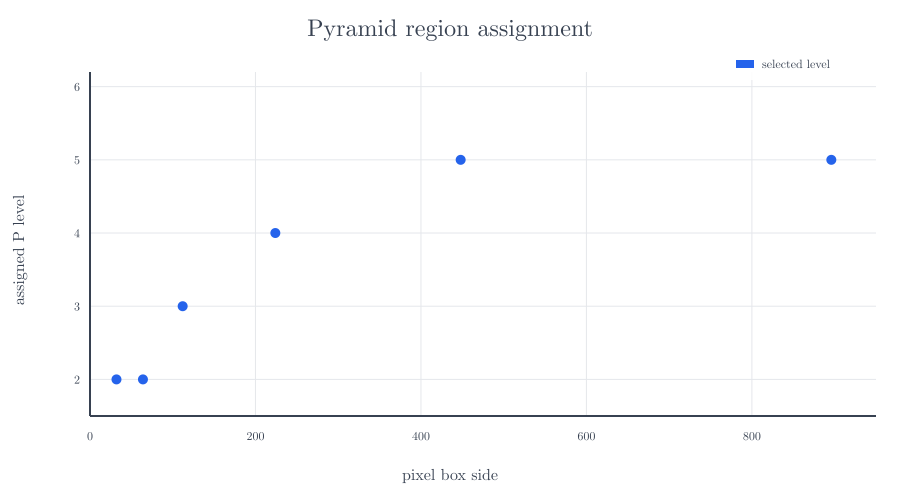
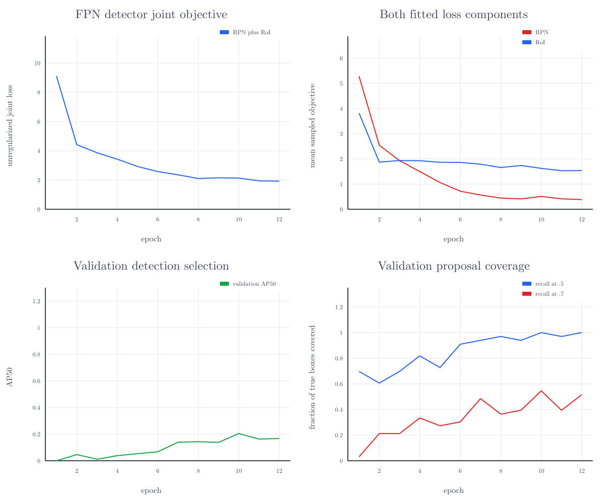
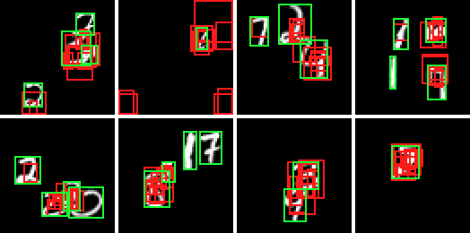
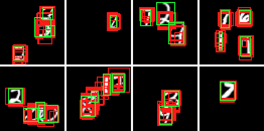

Feature pyramids for multiscale detection
Abstract
Objects at different scales need both spatial detail and useful high-level features. This report verifies tensor top-down/lateral fusion and scale-based region routing, then fits the full compact source FPN detector through an explicit joint Adam loop and plots actual held-out proposals, detections and learning curves.
Source example: examples/cpp/source/nn/1_convolutional_neural_networks/1.6_object_detection/fpn.cpp.
The method
FPN projects each backbone scale to a shared width, adds resized deeper inner features, and independently smooths every output. A multi-level shared RPN proposes regions; each region chooses one pyramid level before the shared box head. The source64-pixel adaptation below preserves these mechanisms while using a small learned convolutional backbone and canonical RoI side32.
The concept diagram below is drawn by dm::graphics::Diagram. Its editable C++
source is the complete block below; regeneration uses the same datamunge toolchain
as the numerical examples. Exports consume the saved local SVG.
#include <dm/dm.hpp>
int main() {
std::filesystem::create_directories("build");
dm::graphics::Diagram diagram;
diagram.node("n0", {0.0, 0}, "Lateral plus top-down\nUnsmoothed inner maps");
diagram.node("n1", {5.2, 0}, "Smooth every scale\nShared multilevel RPN");
diagram.node("n2", {10.4, 0}, "Route region scale\nJoint tensor Adam");
diagram.edge("n0", "n1").edge("n1", "n2");
diagram.save_svg("build/fpn_concept.svg");
}
Executed tensor architecture
This figure executes the inference configuration shown in the code, using a zero-valued shape probe without fitting or loading a checkpoint. Named stage boundaries group whole subgraphs where available; other nodes retain functional-layer detail. Exact batch-inclusive shapes and reachable parameter totals come from the trace. Shared linear scales map spatial dimensions and channel counts to blocks; the one-pixel visibility floor is disclosed in the legend. Labels use compact monospace text, rotate counterclockwise and sit beside their own glyphs. Arrows flow left to right; wide diagrams scroll at native size on the website.
#include <dm/dm.hpp>
int main() {
namespace n = dm::nn;
namespace m = n::models;
n::set_num_threads(2);
std::filesystem::create_directories("build");
m::DetectionSceneConfig cfg;
n::ParameterStore p(17);
cfg.scenes = 80;
cfg.seed = 11;
n::Module architecture_model(
[&](const n::Tensor& image) {
return m::FpnDigitDetectorForward(p, image).rpn.objectness_logits;
},
"Feature pyramids for multiscale detection");
n::ModelPlotOptions options;
options.style = n::ModelPlotStyle::Flow;
options.detail = n::ModelPlotDetail::Blocks;
options.labels = {.type = n::ModelPlotLabel::NameAndShape, .size = 12, .wrap = 24};
options.spacing = {.layer = 24, .lane = 12, .label = 8, .margin = 20};
options.sizing.spatial_size = 96;
options.sizing.channel_size = 42;
options.sizing.minimum_extent = 1;
options.opacity = .8;
const auto diagram = architecture_model.plot(n::zeros({1, 64, 64, 1}), options);
diagram.save_svg("build/fpn_architecture.svg");
std::print(
"{} displayed nodes; {} reachable learned values.\n",
diagram.nodes().size(),
diagram.parameter_count());
}42 displayed nodes; 1291363 reachable learned values.

Simple example: unsmoothed top-down fusion on odd grids
Let I_l = lateral(C_l) + resize_nearest(I_(l+1)) and
P_l = smooth_3x3(I_l). The top-down branch carries *I*, not P: propagating
smoothed maps would repeatedly filter and rescale deeper features. Every lateral
is a linear 1x1 convolution; every output has its own linear 3x3 smoothing filter.
No ReLU or batch norm clips negative responses. Resizing to the lateral's actual
height/width handles odd rectangular grids, rather than assuming exact doubling.
The controlled maps below have shapes 7x9, 4x5 and 2x3. Lateral weights are one; smoothing filters have only a central coefficient, respectively 2, 3 and 4. An independent nearest-index oracle checks all output values and every input derivative of the summed outputs. All four displayed maps share one colour range.
#include <dm/dm.hpp>
int main() {
namespace n = dm::nn;
namespace m = n::models;
const int H[] = {7, 4, 2}, W[] = {9, 5, 3};
const auto type = n::DType::Float64;
n::ParameterStore p(17, type);
std::vector<n::Tensor> input;
std::vector<std::vector<double>> values;
for (int l = 0; l < 3; ++l) {
const auto x = n::sin(.4 * n::arange(0, H[l] * W[l]).to(type) + l)
.reshape({1, H[l], W[l], 1})
.detach()
.requires_grad_();
input.push_back(x);
values.push_back(x.to_vector<double>());
}
{
n::NoGradGuard guard;
m::FeaturePyramid(p, "example", input, 1);
for (int l = 0; l < 3; ++l) {
const auto prefix = "example/level" + std::to_string(l + 2);
p.set(prefix + "/lateral/W", n::ones({1, 1, 1, 1}, type));
p.set(prefix + "/smooth/W",
n::one_hot(n::from_vector(std::vector<std::int64_t>{4}), 9, 1, 0, type)
.reshape({3, 3, 1, 1}) *
double(l + 2));
}
}
const auto f = m::FeaturePyramid(p, "example", input, 1);
n::Tensor loss = n::zeros({}, type);
std::vector<std::vector<double>> expected;
for (int l = 0; l < 3; ++l) {
loss = loss + n::sum(f.levels[l]);
expected.emplace_back(H[l] * W[l], 0.);
}
double value_error = 0, gradient_error = 0;
int negative = 0;
// Independent host oracle: this checks the tensor model rather than implementing it.
for (int l = 0; l < 3; ++l)
for (int r = 0; r < H[l]; ++r)
for (int c = 0; c < W[l]; ++c) {
int rr = r, cc = c;
double sum = 0;
for (int j = l; j < 3; ++j) {
if (j > l) {
rr = rr * H[j] / H[j - 1];
cc = cc * W[j] / W[j - 1];
}
sum += values[j][rr * W[j] + cc];
expected[j][rr * W[j] + cc] += l + 2;
}
value_error =
std::max(value_error, std::abs(f.levels[l].at({0, r, c, 0}) - (l + 2) * sum));
negative += f.levels[l].at({0, r, c, 0}) < 0;
}
const auto gradients = n::grad(loss, input);
for (int l = 0; l < 3; ++l)
for (int i = 0; i < H[l] * W[l]; ++i)
gradient_error =
std::max(gradient_error,
std::abs(gradients[l].reshape({H[l] * W[l]}).at({i}) - expected[l][i]));
if (value_error > 1e-12 || gradient_error > 1e-12 || !negative ||
f.levels[3].shape() != n::Shape{1, 1, 2, 1})
return 1;
if (f.levels[3].at({0, 0, 1, 0}) != f.levels[2].at({0, 0, 2, 0}))
return 1;
const double limit = n::max(n::abs(f.levels[0])).item() + .1;
const auto map = [&](const n::Tensor &x, const std::string &title) {
return n::plot_tensor_map(n::reverse(x.reshape({7, 9}), {0}), -limit, limit)
.title(title)
.x_label("column")
.y_label("row")
.x_limits(-.5, 8.5)
.y_limits(-.5, 6.5);
};
const auto up = n::resize_nearest(f.inner[1], {7, 9});
std::filesystem::create_directories("build");
dm::graphics::RLayout::create(2, 2)
.add(map(input[0], "C2 input"))
.add(map(up, "Upsampled C3 inner"))
.add(map(f.inner[0], "Unsmoothed inner P2"))
.add(map(f.levels[0], "Smoothed output P2"))
.size(1200, 1000)
.fit_panels()
.save_svg("build/fpn_fusion.svg");
std::print("Odd-grid value error {:.12f}; every-input gradient error {:.12f}; {} negative "
"output values preserved. Extra coarser output is 1x2 and samples coarsest "
"columns 0 and 2 exactly. Shared plotted range [{:.3f},{:.3f}].\n",
value_error, gradient_error, negative, -limit, limit);
}Odd-grid value error 0.000000000000; every-input gradient error 0.000000000000; 35 negative output values preserved. Extra coarser output is 1x2 and samples coarsest columns 0 and 2 exactly. Shared plotted range [-5.754,5.754].

The optional coarser map uses a 1x1 stride-two VALID max pool, so it selects positions 0, 2, and so on without another filter or activation. In the full four-input C2–C5 detector this map is P6; the small three-input fixture above simply tests an extra coarser output.
Simple example: route each region to its scale
The paper's rule assigns pixel box side s=sqrt(max(height*width,1e-6)) to
clamp(floor(4+log2(s/canonical)),2,5). The default canonical side is 224;
this 64-pixel detection adaptation uses 32. Routing is discrete. Each box is
pooled only on its assigned level, and a tensor gather restores original order.
The pooling operation is the source's 14x14 bilinear crop plus 2x2 max pool,
not ROIAlign. Box coordinates are constants for feature sampling.
Constant feature maps equal to their level IDs make routing directly observable. Both extremes are clamped in this fixture, and the selected pooled value should be exactly the chosen level everywhere.
#include <dm/dm.hpp>
int main() {
namespace n = dm::nn;
namespace m = n::models;
n::NoGradGuard guard;
std::vector<m::DetectionPyramidLevel> maps;
for (int k = 2; k <= 5; ++k) {
const int cells = 2048 / (1 << k);
maps.push_back({n::full({1, cells, cells, 1}, double(k)), 1 << k});
}
const auto sides = n::tensor({32., 64., 112., 224., 448., 896.}), start = n::ones({6}) * 64.;
const auto boxes = n::stack({start, start, start + sides, start + sides}, 1);
const auto indices = n::zeros({6}, n::DType::Int64);
const auto levels = m::PyramidDetectionLevels(boxes, 224),
pool = m::PyramidDetectionRoiPool(maps, boxes, indices, 224);
if (levels.to_vector<int>() != std::vector<int>{2, 2, 3, 4, 5, 5})
return 1;
for (int i = 0; i < 6; ++i)
if (n::max(n::abs(n::slice_axis(pool, 0, i, i + 1) - levels.at({i}))).item() > 1e-6)
return 1;
auto p = dm::graphics::RPlot::create();
p.points(sides.to_vector<double>(), levels.to_vector<double>(), "selected level",
{37, 99, 235}, 5.)
.title("Pyramid region assignment")
.x_label("pixel box side")
.y_label("assigned P level")
.x_limits(0, 950)
.y_limits(1.5, 6.2);
std::filesystem::create_directories("build");
p.size(900, 500).save_svg("build/fpn_routing.svg");
std::print("| side | assigned level | pooled value |\n|---:|---:|---:|\n");
for (int i = 0; i < 6; ++i)
std::print("| {:.0f} | {:.0f} | {:.6f} |\n", sides.at({i}), levels.at({i}),
pool.at({i, 0, 0, 0}));
}| side | assigned level | pooled value |
|---|---|---|
| 32 | 2 | 2.000000 |
| 64 | 2 | 2.000000 |
| 112 | 3 | 3.000000 |
| 224 | 4 | 4.000000 |
| 448 | 5 | 5.000000 |
| 896 | 5 | 5.000000 |

Actual scene data and full source compact detector
The bounded split remains 64 fit and 16 validation scenes from the first 2048 MNIST training digits, seed 11; eight test scenes from the first 512 official test digits, seed 22. The actual image pixels and tight target boxes are shown below. This keeps the data protocol inspectable while changing the feature and anchor hierarchy. It does not establish an architecture ranking.
#include <dm/dm.hpp>
int main() {
namespace n = dm::nn;
n::set_num_threads(2);
std::filesystem::path cache;
if (const auto *p = std::getenv("DATAMUNGE_DATA_DIR"))
cache = p;
else if (const auto *p = std::getenv("XDG_CACHE_HOME"))
cache = std::filesystem::path(p) / "datamunge/datasets";
else
cache = std::filesystem::path(std::getenv("HOME")) / ".cache/datamunge/datasets";
dm::datasets::fetch("mnist", (cache / "mnist").string());
const auto train = n::load_mnist((cache / "mnist").string(), "train");
n::models::DetectionSceneConfig cfg;
cfg.scenes = 80;
cfg.seed = 11;
const auto scenes = n::models::MakeTensorDetectionScenes(
n::slice_axis(train.images, 0, 0, 2048), n::slice_axis(train.labels, 0, 0, 2048), cfg);
std::vector<n::Tensor> boxes(scenes.boxes.begin(), scenes.boxes.begin() + 8);
const auto preview = n::models::DrawDetectionBoxes(n::slice_axis(scenes.images, 0, 0, 8),
boxes, {.1, 1., .2});
std::filesystem::create_directories("build");
n::save_image_grid(preview, "build/fpn_scenes.png", 4, 0., 1., 4, 1., 2);
std::int64_t objects = 0;
for (const auto &b : scenes.boxes)
objects += b.shape()[0];
std::print("80 generated training/validation scenes; {} accepted digits. Preview: first "
"eight training scenes with tight green boxes.\n",
objects);
}80 generated training/validation scenes; 195 accepted digits. Preview: first eight training scenes with tight green boxes.

The source four-convolution stride-four backbone is extended with stride-two 3x3 ReLU stages of widths 128/256/256. Lateral/smoothing projections give 64-channel P2..P5 maps; pooled P6 adds a fifth RPN level. One shared 128-channel RPN head sees three ratios and one anchor side per level. Strides 4/8/16/32/64 use sides 8/16/32/64/128, giving 1023 anchors in concatenated level order. The shared 256-unit box head pools P2..P5 by the scale rule with canonical side 32. The complete model has 2174882 learned scalars, all fitted here. This is the source compact convolutional pyramid, not a pretrained ResNet. There is no batch norm, dropout, moving model state or hidden fitting.
Explicit joint tensor Adam loop
The code creates every backbone/FPN/RPN/box-head leaf before constructing Adam.
It then makes 384 updates over twelve epochs, batch two images, learning rate
.001. The objective is RPN logistic/Smooth-L1 plus RoI CE/selected-class Smooth-L1,
with .00005*sum(kernel²) added explicitly and biases excluded. The proposal
path is detached from the same forward pass; gradients reach shared pyramid
features through both task losses. Training appends target/random RoIs, while
validation/test proposals come solely from the RPN. The best validation inclusive
VOC AP50 checkpoint is restored for the held-out evaluation.
#include <dm/dm.hpp>
int main() {
namespace n = dm::nn;
namespace m = n::models;
n::set_num_threads(2);
std::filesystem::path cache;
if (const auto *p = std::getenv("DATAMUNGE_DATA_DIR"))
cache = p;
else if (const auto *p = std::getenv("XDG_CACHE_HOME"))
cache = std::filesystem::path(p) / "datamunge/datasets";
else
cache = std::filesystem::path(std::getenv("HOME")) / ".cache/datamunge/datasets";
dm::datasets::fetch("mnist", (cache / "mnist").string());
const auto train = n::load_mnist((cache / "mnist").string(), "train");
m::DetectionSceneConfig cfg;
cfg.scenes = 80;
cfg.seed = 11;
const auto scenes = m::MakeTensorDetectionScenes(
n::slice_axis(train.images, 0, 0, 2048), n::slice_axis(train.labels, 0, 0, 2048), cfg);
const auto anchors = m::FpnDigitAnchors();
std::vector<std::int64_t> fit_rows(64), val_rows(16);
std::iota(fit_rows.begin(), fit_rows.end(), 0);
std::iota(val_rows.begin(), val_rows.end(), 64);
n::ParameterStore p(17);
{
n::NoGradGuard guard;
const auto f = m::FpnDigitDetectorForward(p, n::zeros({1, 64, 64, 1}));
const auto pooled =
m::PyramidDetectionRoiPool(f.roi_levels, n::tensor({0., 0., 8., 8.}, {1, 4}),
n::from_vector(std::vector<std::int64_t>{0}), 32);
m::PooledDetectionRoiHead(p, pooled);
}
if (p.count() != 2174882)
return 1;
// Inference borrows p/anchors and uses one FPN/RPN forward for proposal and box heads.
const auto detect = [&](const m::TensorDetectionScenes &data,
const std::vector<std::int64_t> &rows) {
n::NoGradGuard guard;
const auto f =
m::FpnDigitDetectorForward(p, 2. * n::gather(data.images, n::from_vector(rows)) - 1.);
const auto proposals = m::ComputeDetectionProposals(f.rpn, anchors, 64, 64);
const auto packed = m::PackDetectionRois(proposals);
if (!packed.indices.numel())
return std::make_pair(m::SuppressDetectionCandidates(n::zeros({0, 4}), n::zeros({0}),
n::zeros({0}, n::DType::Int64),
n::zeros({0}, n::DType::Int64)),
proposals);
const auto head = m::PooledDetectionRoiHead(
p, m::PyramidDetectionRoiPool(f.roi_levels, packed.pixels, packed.indices, 32));
return std::make_pair(
m::DecodeDetectionRoiOutputs(head, packed.pixels,
n::gather(n::from_vector(rows), packed.indices)),
proposals);
};
// Record conversion only presents existing tensor annotations; it performs no box arithmetic.
const auto truth_records = [](const m::TensorDetectionScenes &data,
const std::vector<std::int64_t> &rows) {
std::vector<m::DetectionEvaluationTruth> truth;
for (auto i : rows) {
const auto boxes = n::boxes_to_vector(data.boxes[i]);
const auto labels = data.labels[i].to_vector<int>();
for (std::size_t j = 0; j < boxes.size(); ++j)
truth.push_back({int(i), labels[j], boxes[j]});
}
return truth;
};
const auto val_truth = truth_records(scenes, val_rows);
std::vector<int> val_ids(val_rows.begin(), val_rows.end());
n::OptimizerConfig config;
config.kind = n::OptimizerKind::Adam;
n::Optimizer adam(p, .001, config);
n::BatchOrder order(64, 2, 29);
n::Generator sampling(7);
std::vector<n::Tensor> kernels;
for (const auto &v : p.parameters())
if (v.dim() >= 2)
kernels.push_back(v);
std::filesystem::create_directories("build");
const std::string checkpoint = "build/fpn_best.npz";
std::vector<double> epochs, losses, validation, rpn_losses, roi_losses, recall50_trace,
recall70_trace;
double best = -1;
int selected = 0, steps = 0;
std::print("| epoch | joint loss | RPN loss | RoI loss | val AP50 | val RPN recall .5 "
"|\n|---:|---:|---:|---:|---:|---:|\n");
for (int epoch = 1; epoch <= 12; ++epoch) {
order.begin_epoch();
double total = 0, total_rpn = 0, total_roi = 0;
std::size_t seen = 0;
for (auto rows = order.next(); !rows.empty(); rows = order.next()) {
const auto f = m::FpnDigitDetectorForward(
p, 2. * n::gather(scenes.images, n::from_vector(rows)) - 1.);
const auto rpn = f.rpn;
const auto proposals = m::ComputeDetectionProposals(rpn, anchors, 64, 64);
const auto batch = m::SampleDetectionRois(scenes, rows, proposals, sampling);
const auto targets = m::MakeDetectionRpnTargets(anchors, scenes, rows, sampling);
const auto head = m::PooledDetectionRoiHead(
p, m::PyramidDetectionRoiPool(f.roi_levels, batch.pixels, batch.indices, 32));
const auto region_loss =
m::DetectionRoiLoss(head, batch.labels, batch.targets, batch.mask);
const auto proposal_loss =
m::RpnLoss(rpn, targets.labels, targets.weights, targets.targets, targets.positives);
const auto joint = region_loss + proposal_loss;
n::Tensor penalty = n::zeros({});
for (const auto &kernel : kernels)
penalty = penalty + n::sum(n::square(kernel));
if (!std::isfinite(joint.item()))
return 1;
total += joint.item() * rows.size();
total_rpn += proposal_loss.item() * rows.size();
total_roi += region_loss.item() * rows.size();
seen += rows.size();
adam.minimize(joint + .00005 * penalty);
++steps;
}
const auto diagnostic = detect(scenes, val_rows);
const auto prediction = diagnostic.first;
const auto metric = m::EvaluateDetectionDataset(m::DetectionEvaluationRecords(prediction),
val_truth, val_ids, false, true);
epochs.push_back(epoch);
losses.push_back(total / double(seen));
validation.push_back(metric.ap50.item());
rpn_losses.push_back(total_rpn / double(seen));
roi_losses.push_back(total_roi / double(seen));
double val50 = 0, val70 = 0;
for (std::size_t i = 0; i < val_rows.size(); ++i)
if (diagnostic.second[i].shape()[0] && scenes.boxes[val_rows[i]].shape()[0]) {
const auto overlap =
n::max(n::box_iou(diagnostic.second[i], scenes.boxes[val_rows[i]]), {0});
val50 += n::count_nonzero(n::greater_equal(overlap, .5)).item();
val70 += n::count_nonzero(n::greater_equal(overlap, .7)).item();
}
recall50_trace.push_back(val50 / val_truth.size());
recall70_trace.push_back(val70 / val_truth.size());
if (metric.ap50.item() > best) {
best = metric.ap50.item();
selected = epoch;
p.save(checkpoint);
}
std::print("| {} | {:.6f} | {:.6f} | {:.6f} | {:.6f} | {:.6f} |\n", epoch, losses.back(),
rpn_losses.back(), roi_losses.back(), validation.back(), recall50_trace.back());
}
p.load(checkpoint);
const auto restored = m::EvaluateDetectionDataset(
m::DetectionEvaluationRecords(detect(scenes, val_rows).first), val_truth, val_ids, false,
true);
if (std::abs(restored.ap50.item() - best) > 1e-12)
return 1;
const auto digits = n::load_mnist((cache / "mnist").string(), "test");
cfg.scenes = 8;
cfg.seed = 22;
const auto test = m::MakeTensorDetectionScenes(n::slice_axis(digits.images, 0, 0, 512),
n::slice_axis(digits.labels, 0, 0, 512), cfg);
std::vector<std::int64_t> test_rows(8);
std::iota(test_rows.begin(), test_rows.end(), 0);
std::vector<int> test_ids(test_rows.begin(), test_rows.end());
const auto diagnostic = detect(test, test_rows);
const auto output = diagnostic.first;
double covered50 = 0, covered70 = 0;
std::int64_t count = 0;
for (int i = 0; i < 8; ++i) {
const auto &boxes = diagnostic.second[i];
count += boxes.shape()[0];
if (boxes.shape()[0] && test.boxes[i].shape()[0]) {
const auto overlap = n::max(n::box_iou(boxes, test.boxes[i]), {0});
covered50 += n::count_nonzero(n::greater_equal(overlap, .5)).item();
covered70 += n::count_nonzero(n::greater_equal(overlap, .7)).item();
}
}
const auto records = m::DetectionEvaluationRecords(output);
const auto truth = truth_records(test, test_rows);
const auto voc = m::EvaluateDetectionDataset(records, truth, test_ids, false, true),
coco = m::EvaluateDetectionDataset(records, truth, test_ids, true);
// Preserve the exact evaluated boxes and scores for an independent AP recount.
std::vector<double> saved_predictions, saved_truth;
for(const auto& detection:records){saved_predictions.insert(saved_predictions.end(),{double(detection.image),double(detection.label),double(detection.score),double(detection.box[0]),double(detection.box[1]),double(detection.box[2]),double(detection.box[3])});}
for(const auto& target:truth){saved_truth.insert(saved_truth.end(),{double(target.image),double(target.label),double(target.box[0]),double(target.box[1]),double(target.box[2]),double(target.box[3]),double(target.difficult),double(target.crowd)});}
n::save_npz("build/fpn_detections_"+std::string("0")+".npz",{{"predictions",n::from_vector(saved_predictions,{std::int64_t(records.size()),7})},{"truth",n::from_vector(saved_truth,{std::int64_t(truth.size()),8})},{"images",n::from_vector(test_ids)},{"metrics",n::stack({voc.ap50,coco.ap75,coco.ap},0)}});
// Group integer output row indices to draw the actual selected predictions.
std::vector<n::Tensor> predicted_boxes;
const auto image_ids = output.images.to_vector<int>();
for (int image = 0; image < 8; ++image) {
std::vector<std::int64_t> index;
for (std::size_t j = 0; j < image_ids.size(); ++j)
if (image_ids[j] == image)
index.push_back(std::int64_t(j));
predicted_boxes.push_back(n::gather(output.boxes, n::from_vector(index)));
}
const auto green = m::DrawDetectionBoxes(test.images, test.boxes, {.1, 1., .2}),
red = m::DrawDetectionBoxes(test.images, predicted_boxes, {1., .1, .1}),
raw = test.images * n::ones({1, 1, 1, 3});
const auto sheet = n::where(n::any(n::not_equal(green, raw), {3}, true), green, red);
n::save_image_grid(sheet, "build/fpn_detections.png", 4, 0., 1., 4, 1., 2);
std::filesystem::create_directories("figures");
std::filesystem::copy_file("build/fpn_detections.png", "figures/fpn_detections.png",
std::filesystem::copy_options::overwrite_existing);
std::vector<n::Tensor> top;
for (const auto &boxes : diagnostic.second)
top.push_back(n::slice_axis(boxes, 0, 0, std::min<std::int64_t>(10, boxes.shape()[0])));
const auto proposal_sheet = m::DrawDetectionBoxes(test.images, top, {1., .1, .1});
const auto proposal_preview =
n::where(n::any(n::not_equal(green, raw), {3}, true), green, proposal_sheet);
n::save_image_grid(proposal_preview, "build/fpn_proposals.png", 4, 0., 1., 4, 1., 2);
std::filesystem::copy_file("build/fpn_proposals.png", "figures/fpn_proposals.png",
std::filesystem::copy_options::overwrite_existing);
auto a = dm::graphics::RPlot::create();
a.lines(epochs, losses, "RPN plus RoI", {37, 99, 235})
.title("FPN detector joint objective")
.x_label("epoch")
.y_label("unregularized joint loss")
.y_limits(0, 1.3 * *std::max_element(losses.begin(), losses.end()));
auto parts = dm::graphics::RPlot::create();
parts.lines(epochs, rpn_losses, "RPN", {220, 38, 38})
.lines(epochs, roi_losses, "RoI", {37, 99, 235})
.title("Both fitted loss components")
.x_label("epoch")
.y_label("mean sampled objective")
.y_limits(0, 1.3 * std::max(*std::max_element(rpn_losses.begin(), rpn_losses.end()),
*std::max_element(roi_losses.begin(), roi_losses.end())));
auto b = dm::graphics::RPlot::create();
b.lines(epochs, validation, "validation AP50", {22, 163, 74})
.title("Validation detection selection")
.x_label("epoch")
.y_label("AP50")
.y_limits(0, 1.3);
auto coverage = dm::graphics::RPlot::create();
coverage.lines(epochs, recall50_trace, "recall at .5", {37, 99, 235})
.lines(epochs, recall70_trace, "recall at .7", {220, 38, 38})
.title("Validation proposal coverage")
.x_label("epoch")
.y_label("fraction of true boxes covered")
.y_limits(0, 1.35);
dm::graphics::RLayout::create(2, 2)
.add(a)
.add(parts)
.add(b)
.add(coverage)
.size(1200, 1000)
.fit_panels()
.save_svg("build/fpn_training.svg");
std::print("{} learned scalars, {} Adam updates; selected epoch {}, validation AP50 {:.6f}. "
"Test: {} scenes, {} digits, {:.3f} proposals/image, proposal recall .5/.7 "
"{:.6f}/{:.6f}; inclusive VOC AP50 {:.6f}, COCO AP75 {:.6f}, AP50:95 {:.6f}; {} "
"detections. One shared backbone evaluation per image; no moving state.\n",
p.count(), steps, selected, best, 8, truth.size(), double(count) / 8.,
covered50 / truth.size(), covered70 / truth.size(), voc.ap50.item(),
coco.ap75.item(), coco.ap.item(), records.size());
}| epoch | joint loss | RPN loss | RoI loss | val AP50 | val RPN recall .5 |
|---|---|---|---|---|---|
| 1 | 9.101117 | 5.282952 | 3.818165 | 0.000000 | 0.696970 |
| 2 | 4.414632 | 2.543064 | 1.871568 | 0.046296 | 0.606061 |
| 3 | 3.863108 | 1.930265 | 1.932843 | 0.011327 | 0.696970 |
| 4 | 3.422377 | 1.496159 | 1.926218 | 0.038277 | 0.818182 |
| 5 | 2.926278 | 1.061030 | 1.865247 | 0.053072 | 0.727273 |
| 6 | 2.575825 | 0.716066 | 1.859759 | 0.067361 | 0.909091 |
| 7 | 2.353949 | 0.564462 | 1.789486 | 0.139226 | 0.939394 |
| 8 | 2.100858 | 0.444223 | 1.656636 | 0.143155 | 0.969697 |
| 9 | 2.148081 | 0.411405 | 1.736676 | 0.137939 | 0.939394 |
| 10 | 2.131686 | 0.508852 | 1.622834 | 0.204254 | 1.000000 |
| 11 | 1.942687 | 0.413889 | 1.528798 | 0.162879 | 0.969697 |
| 12 | 1.921337 | 0.384365 | 1.536971 | 0.167202 | 1.000000 |
2174882 learned scalars, 384 Adam updates; selected epoch 10, validation AP50 0.204254. Test: 8 scenes, 23 digits, 100.000 proposals/image, proposal recall .5/.7 0.913043/0.434783; inclusive VOC AP50 0.347354, COCO AP75 0.057022, AP50:95 0.163782; 196 detections. One shared backbone evaluation per image; no moving state.



Regenerate adjacent views from this run
#include <dm/dm.hpp>
int main(){std::filesystem::copy_file("build/fpn_detections.png","build/export_fpn_detections.png",std::filesystem::copy_options::overwrite_existing);}#include <dm/dm.hpp>
int main(){std::filesystem::copy_file("build/fpn_proposals.png","build/export_fpn_proposals.png",std::filesystem::copy_options::overwrite_existing);}Conclusion
The executed results above describe the current selected checkpoint and its held-out detection quality. Small scene sets and bounded schedules do not establish architecture rankings. Inspect localization, missed targets and false positives together with validation selection and the actual prediction gallery.
The odd-grid oracle and derivative checks establish the unsmoothed top-down invariant before fitting. Constant-level pooling exposes discrete scale routing and order restoration. The full model then fits all compact source parameters visibly, with original training/test pixels and selected proposal/detection galleries. This bounded run reports its outcomes without claiming paper accuracy, runtime speedups or a cross-architecture ranking.
References
- [Lin et al. (2017), Feature Pyramid Networks for Object Detection](https://arxiv.org/abs/1612.03144).
- [TorchVision official feature_pyramid_network.py](https://github.com/pytorch/vision/blob/main/torchvision/ops/feature_pyramid_network.py).
- [Ren et al. (2015), Faster R-CNN](https://arxiv.org/abs/1506.01497).